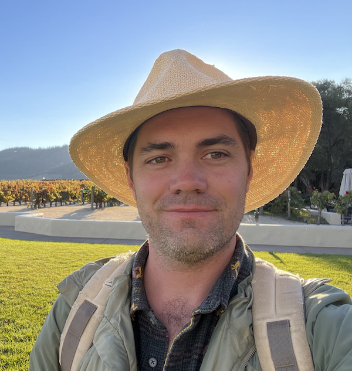

San Diego, CA
Staff Bioinformatics Scientist · Genomics Expert · Scientific Consultant
Staff Bioinformatics Scientist with 8+ years of industry experience in genomics, metagenomics, and long-read sequencing — building pipelines, publishing research, and translating complex biological data into actionable insight across biotech, pharma, and litigation consulting.
I'm a bioinformatics scientist and data science leader with 8+ years of industry experience building computational infrastructure at the intersection of genomics, machine learning, and biological discovery.
At PacBio, I lead bioinformatics software development across R&D, marketing, and field support — developing analytical pipelines and evaluation frameworks for HiFi long-read sequencing, variant calling, oncology, and microbiome research. I've shipped tools used by customers and internal teams alike, and served as Software NPT Lead, coordinating cross-functional product development from concept to deployment.
Before PacBio, I drove machine learning-based discovery at Novozymes and Biota Technology — applying metagenomic signatures to probiotic development and energy exploration, respectively. Earlier in my career I contributed to foundational research in viral metagenomics, pathogen characterization, and CRISPR biology, resulting in 22 peer-reviewed publications and an H-index of 13.
I hold a PhD in Bioinformatics and Systems Biology from the University of Delaware, where I was among the first graduates of the program, and a BSc in Pharmaceutical Product Development from West Chester University.
Beyond my primary industry work, I provide scientific consulting and expert witness services in genomics litigation — bringing peer-reviewed expertise and hands-on sequencing experience to cases involving pathogen attribution, NGS data interpretation, and computational biology methodology.
Outside the lab, you'll find me cycling, hiking, or spending time with my dogs.
Develop bioinformatics workflows for secondary analysis of NGS data across PacBio HiFi, SBB, Illumina, and Nanopore platforms. Support oncology and microbiome research; build visualizations in Python and R Markdown for variant calling performance evaluation.
Built automated, data science-driven infrastructure for microbiome research integrating metagenomics, 16S, metabolomics, and metatranscriptomics. Led biological discovery of novel bacterial and phage probiotic candidates from human and animal gut samples.
Applied machine learning to microbial signatures from subsurface samples to trace reservoir connectivity, assess production potential, and optimize resource management strategies in energy exploration.
Serve as the bioinformatics lead for New Product Teams, coordinating software development priorities across R&D, product marketing, and field application science. Bridge scientific requirements and customer-facing workflows to ensure analytical tools meet both performance benchmarks and real-world usability standards.
Designed and maintained bioinformatics workflows spanning PacBio HiFi, Illumina, and Oxford Nanopore Technologies — enabling multi-platform performance benchmarking used in competitive product positioning and customer evaluations.
Author and maintainer of the DNA Pol A 762 Caller , a published tool for predicting viral replication strategy via polymerase analysis. Contributor to SeqScreen , a genome surveillance tool featured in Genome Biology (2022).
Rapid and robust characterization of unknown pathogenic DNA/RNA sequences.
Identifying novel CRISPR families from environmental samples.
Examining how database composition affects k-mer-based taxonomic classification over time.
Viral metagenomics pipeline and web app to explore viral diversity in environmental samples.
Shotgun metagenomic characterization of microbial communities in crop irrigation water sources.
Tool for predicting viral replication strategy via DNA polymerase analysis.